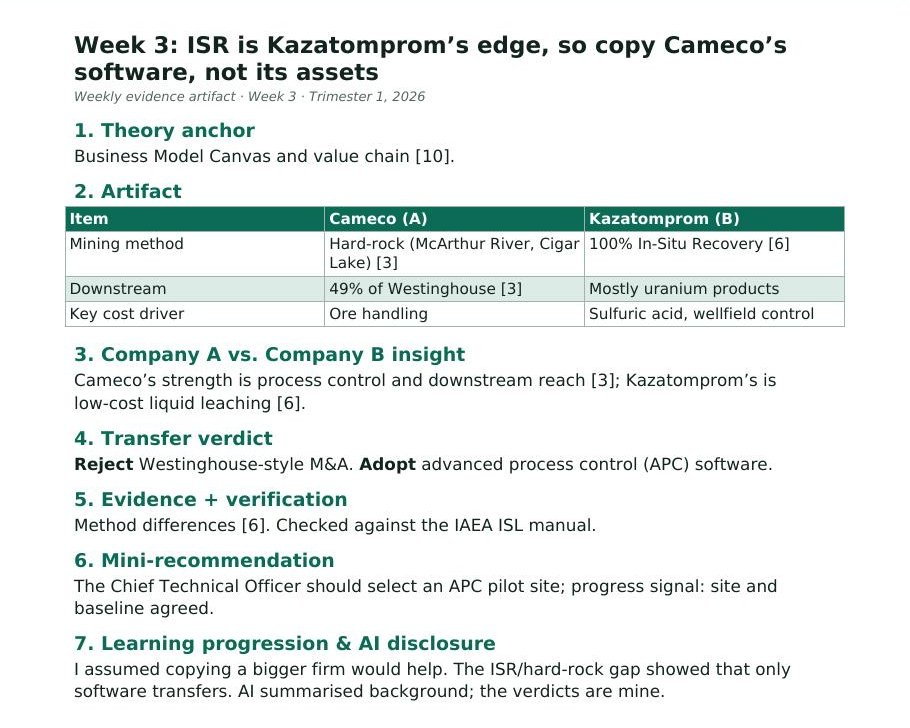

Week 3: ISR is Kazatomprom’s edge, so copy Cameco’s software, not its assets
1. Theory anchor
Business Model Canvas and value chain [10].
2. Artifact

| Item | Cameco (A) | Kazatomprom (B) |
|---|---|---|
| Mining method | Hard-rock (McArthur River, Cigar Lake) [3] | 100% In-Situ Recovery [6] |
| Downstream | 49% of Westinghouse [3] | Mostly uranium products |
| Key cost driver | Ore handling | Sulfuric acid, wellfield control |
3. Company A vs. Company B insight
Cameco’s strength is process control and downstream reach [3]; Kazatomprom’s is low-cost liquid leaching [6].
4. Transfer verdict
Reject Westinghouse-style M&A. Adopt advanced process control (APC) software.
5. Evidence + verification
Method differences [6]. Checked against the IAEA ISL manual.
6. Mini-recommendation
The Chief Technical Officer should select an APC pilot site; progress signal: site and baseline agreed.
7. Learning progression & AI disclosure
I assumed copying a bigger firm would help. The ISR/hard-rock gap showed that only software transfers. AI summarised background; the verdicts are mine.